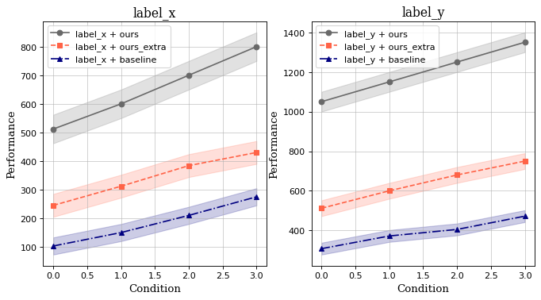

Total failure cases of factor "computation": 1
| ID | Chart | Question | Additional Information | Pitfalls | Most relevant pitfall |
550.png |
 |
What is the performance value for 'label_x + ours_extra' at condition 3?
|
{
"Ground Truth": "430",
"Prediction": "<400>"
}
|
### Potential Pitfalls in the Chart Image: 1. **Color Similarity**: The colors used for different lines might be too similar, causing confusion when distinguishing between them visually. In this case, the red dashed line for 'label_x + ours_extra' may blend with the other lines or background. 2. **Legend Clarity**: The legend is located inside the plot area, which can sometimes make it harder to match the lines with their respective labels, especially if the colors are not distinct enough. 3. **Grid Lines**: While grid lines help in reading values, they can also introduce visual clutter, making it more difficult to pinpoint exact values on the graph. 4. **Data Point Markers**: The markers (e.g., squares for 'ours_extra') are present but may not be large enough or distinctive enough to immediately draw attention to the exact data points. 5. **Performance Ranges**: The shaded regions indicating performance ranges could potentially obscure the lines, leading to misinterpretation of the actual values. ### Most Relevant Pitfall: The most relevant pitfall in this context is the **color similarity**. The red dashed line for 'label_x + ours_extra' is close in hue to the other lines and the background, which makes it challenging to accurately read the value at condition 3. This is likely why the model predicted a value under 400 instead of the correct value of 430. <most_relevant>Color Similarity</most_relevant> |
Color Similarity |